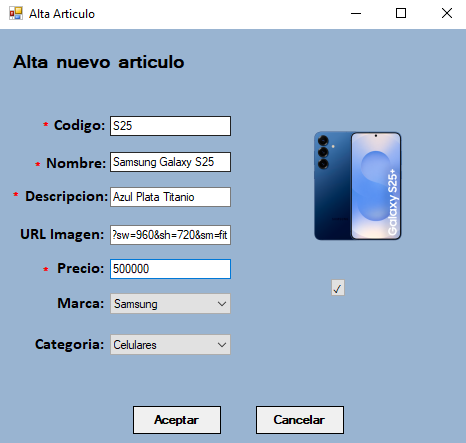
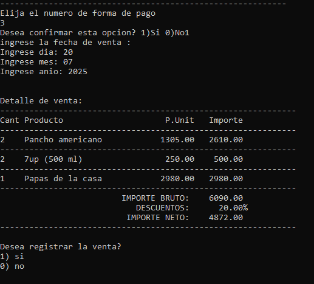
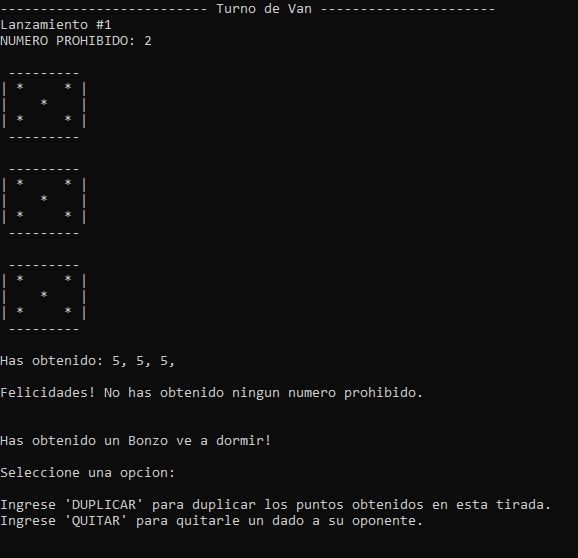

Sistema de gestión de artículos (C# .Net Framework - WinForms)

Aplicación de escritorio (Winforms) en C# .NET Framework para gestión de artículos con su lista de imágenes vinculada, categorías y marcas con ABM completo. Implementa conexión a SQL Server mediante ADO.NET, interfaz gráfica, validaciones y manejo de excepciones.
Sistema de gestión de panchería (C++)

Sistema de gestión gastronómica desarrollado en C++ con programación orientada a objetos y persistencia en archivos binarios. Incluye la gestión completa de productos, ingredientes y recetas, sistema de ventas, control de stock automático y manual, manejo de usuarios, roles y un menú de reportes para la toma de decisiones.
¡Bonzo ve a dormir! - Juego de dados (C++)

Bonzo es un juego de de dados para dos jugadores. El objetivo es Sumar la mayor cantidad de puntos posible a lo largo de las 6 rondas. Cada ronda tiene un "número prohibido" correspondiente al número de la ronda, y los jugadores deben evitar obtenerlo en los dados.
Trabajo práctico integrador de la materia Programación I. Desarrollado en C++ con programación estructurada y modular, contiene una interfaz de consola interactiva con el usuario.